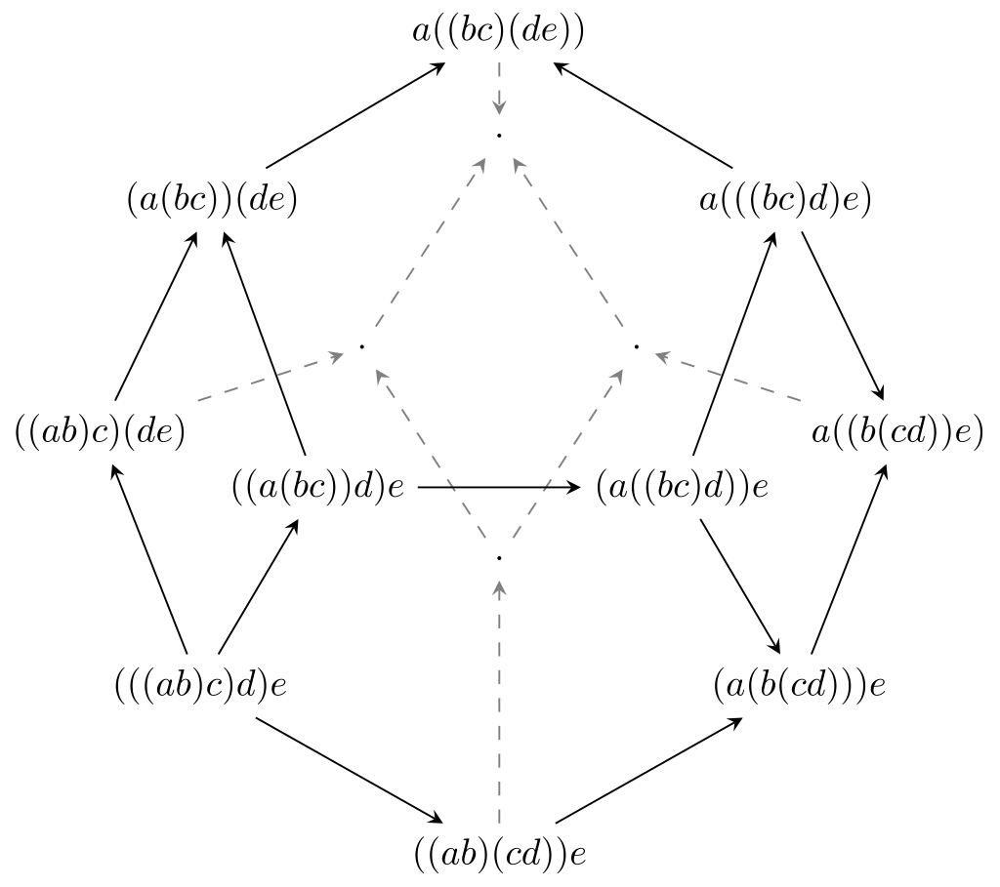

Tensor products are essential to defining Hopf algebras, and we will see that a monoidal structure is the categorical generalisation of a tensor product. In the following all structures are taken to be linear over a field k of characteristic 0, usually just assume k=C.
Given two k-vector spaces V,W, the tensor productV⊗W is a vector space made up k-linear combinations of symbols called “pure tensors” v⊗w for v∈V,w∈W satisfying:
(v1+v2)⊗w=v1⊗w+v2⊗w and v⊗(w1+w2)=v⊗w1+v⊗w2
λ(v⊗w)=(λv)⊗w=v⊗(λw) for λ∈k
First note that k⊗V≅V, which we see via the linear map λ⊗v↦λv with inverse v↦1k⊗v. Secondly, given linear maps ϕ:VW,ϕ′:V′W′ we can define the tensor product linear map as ϕ⊗ϕ′:V⊗V′W⊗W′,v⊗v′↦ϕ(v)⊗ϕ(v′). Note we only defined ϕ⊗ϕ′ on pure tensors, however the assumption that ϕ⊗ϕ′ is a linear map is enough to deduce its action on the rest of V⊗V′.
The reason why tensor products are so useful is that they satisfy the following universal property: for every bilinear map f:V×WZ there exists a unique linear map fˉ:V⊗WZ such that fˉ(v⊗w)=f(v,w). So, in effect, we can turn bilinear maps into linear map. We put this to use with an alternative definition for an algebra:
Definition2.1
We define an algebra in two equivalent ways:
Definition 1: A vector space A with an associative and bilinear map m:A×AA (the product) and unit element 1A∈A s.t. a⋅1A=a=1A⋅a∀a∈A.
Definition 2: A vector space A with linear map m:A⊗AA satisfying the “associativity axiom", which is the condition that the first diagram below commutes, and a “unit map” η:kA,λ↦λ1A such that the second diagram commutes:
Note id:AA is the identity linear map. There are several advantages to Definition 2, the first being that the axioms that define an algebra get reformulated as commuting diagrams. We will also express the axioms for a Hopf algebra as commuting diagrams and this helps a lot to simplify its definition. The second advantage is that by replacing bilinear maps with linear maps, we allow for a more categorical definition of an algebra. In particular, we can view an algebra as an object A in Vect, the category of k-vector spaces, with morphisms m:A⊗AA and η:kA satisfying the commuting diagrams above. A crucial part of the category Vect that allows for the construction of algebras inside it is that is has notion of tensor product. Therefore we might guess that algebras could be defined in other categories so long as they have something that plays the role of the tensor product:
Definition2.2
A monoidal category is a category C with the following:
a functor ⊗:C×CC where C×C is the product category
a natural isomorphism Φ:(⋅⊗⋅)⊗⋅⋅⊗(⋅⊗⋅) called the “associator" (i.e. for all V,W,Z∈ob(C), ΦV,W,Z:(V⊗W)⊗Z∼V⊗(W⊗Z) is an isomorphism).
an object 1∈ob(C) called the “unit” with natural isomorphisms l:⋅⊗1⋅, and r:1⊗⋅⋅ (i.e. V≅V⊗1≅1⊗V)
where Φ,l,r satisfying the following commuting diagrams ∀V,W,Z,U:
2.1 A detour into the Coherence theorem
It is not obvious why we should want the first diagram above to commute (known as the pentagon condition). Note that given an ordered sequence of objects X1,…,Xn in C we can take their tensor product, but depending on the order in which take tensor products we get different bracketings on X1⊗⋯⊗Xn, giving distinct objects of C. We wish to identify the different bracketings so that we can speak of X1⊗⋯⊗Xn unambiguously.
When n=3, we know by Φ the two ways of bracketing give isomorphic objects X1⊗(X2⊗X3)≅(X1⊗X2)⊗X3. For general n≥3 it can then shown there is an isomorphism between any two bracketings of X1⊗⋯⊗Xn by repeated applications of Φ. There is a beautiful way to see this using graphs theory. We identifying each bracketing of X1⊗⋯⊗Xn with a vertex, and connect vertices by an edge if they are related by an application of Φ. The result is a convex polytope known as an “associahedron". The associahedron in the case n=4 is actually depicted in the pentagon diagram above, i.e. it is a pentagon. The case n=5 is depicted below.

Figure0.1Associahedron at n=5
We see that any two bracketings can be related by applications of Φ as a result of the fact that there is a path between each pair of vertices on the associahedron, i.e. it is a connected graph.
So we have that the different bracketings give isomorphic objects, however to unambiguously identify them we need to ensure they are related by unique isomorphisms. Looking at the associahedron we see there can be several different paths between any two vertices, corresponding to different isomorphisms between two bracketings of X1⊗⋯⊗Xn. On the pentagon diagram (i.e. when n=4) we essentially have two possible routes between any pair of vertices. The pentagon condition equates the two routes between ((V⊗W)⊗Z)⊗U and V⊗(W⊗(Z⊗U)), but with a little thought one can see that this means the routes between any pair of vertices on the pentagon diagram are equal. The content of the “Coherence theorem" is that this condition is sufficient to deduce that all bracketings of X1⊗⋯⊗Xn are related by a unique isomorphism for all n≥3, and so they can be canonically identified with each other.
2.2 Examples
The obvious example of a monoidal category is Vect, the category of k-vector spaces. It can be checked that the tensor product as defined at the start satisfies all the conditions to make Vect a monoidal category, where we take the unit to be the field, i.e. 1:=k. However a more interesting example comes from representation theory of groups.
Representations of groups
Recall for a group G and vector space V, a group representation is a group homomorphism ρ:GGL(V). GL(V) is the set of invertible linear maps VV, and under a choice of basis {v1,…,vn} for V this set can be identified with GLn(k), the n×n-invertible matrices over k. So the map ρ sends elements of our group G to linear maps (or matrices) on V in a way that respects the group structure.
Definition2.3
The category Rep(G) has representations of G for objects and morphisms as equivariant maps. One should check this indeed satisfies the axioms of a category.
Proposition2.4
Rep(G) is a monoidal category.
Proof
Indeed for representations ρV:GGL(V),ρW:GGL(W) we define the tensor product representation as ρV⊗W:GGL(V⊗W),g↦ρV(g)⊗ρW(g). As a sanity check first note we do have ρV(g)⊗ρW(g)∈GL(V⊗W), since, after first recalling the definition of a tensor product of linear maps (see start of Section 2), we find ρV(g):VV,ρW(g):WW so ρV(g)⊗ρW(g):V⊗WV⊗W. The unit object of Rep(G) is the trivial representation, defined as ρ1:GGL(k)≅k,ρ1(g)=1k∀g∈G.
□
Definition2.5
For finite group G and field k (think k=C) the group algebrakG is the k-vector space with basis given by g∈G. So a general element is given by expressions of the form ∑g∈Gλgg. We define the product of basis vectors simply as g⋅h=gh, and extend the product linearly to the result of the vector space. More explicitly, the product rule is:
(g∈G∑λgg)⋅(g′∈G∑λg′g′)=h∈G∑(g∑λgλg−1h)h
Obviously the unit of the algebra is simply the element 1 of G regarded as a vector in kG.
Indeed it can be checked this forms an algebra, so in particular it is also a ring, so we can consider modules over kG. Recall a (left) R-module is an abelian group V (for instance a k-vector space) with an action ⊳:R×VV satisfying (r⋅s)⊳v=r⊳(s⊳v) and 1R⊳v=v.
The following result is very important in that it shows representation theory is just a part of module theory. Let kG-Mod denote the category of left kG-modules with morphisms being kG-module homomorphisms.
Proposition2.6
There is an isomorphism between the categories Rep(G) and kG-Mod.
Proof
For every group representation ρ:GGL(V) there is a left kG-module structure on V defined via the following action: (g∑λgg)⊳v:=g∑λgρ(g)(v) It is very quick to check this satisfies axioms to be a module. Conversely, given a kG-module V, define ρ:GGL(V) as ρ(g)(v):=g⊳v. And again the module axioms mean that this is indeed a representation. We have implicitly defined functors between these two categories (although not explained how the functors act on morphisms). It remains to check that the action under one of the functors and then the other leaves the object unchanged, making these functors mutually inverse.
□
We see subrepresentations are equivalent to kG-submodules, and irreducibility of a representation is equivalent to the corresponding kG-module being simple. For more this see Section 3.2 of Sengupta
[
3
]
.